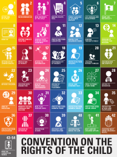

Schools aren't meritocracies. They mistake middle-class habits (language, tastes) for natural intelligence. This inflicts symbolic violence on working-class kids.

Schools use invisible surveillance (timetables, exams) to make students internalize rules. Creates docile bodies that self-police without physical force.

Neoliberalism replaces trust with data (NAPLAN). Forces teachers into performativity (teaching to the test) and allows state governance by numbers.

Schools are active gender regimes. The dominant, aggressive, stoic male ideal subordinates girls and marginalizes non-conforming boys.

Bad teaching = depositing facts into passive kids. Good teaching = problem-posing dialogue that creates conscientisation (critical awareness) and liberation.

The complex space where Indigenous and Western knowledge meet. Indigenous students must be taught to master Western academic codes without losing cultural sovereignty.

The progressive trap: Refusing to explicitly teach working-class kids standard grammar/science traps them in poverty. Schools MUST teach the codes of power.

Provision, Protection, Participation (Art. 12). Schools protect kids but deny them real participation, reducing student voice to tokenism (e.g., picking prom colors).